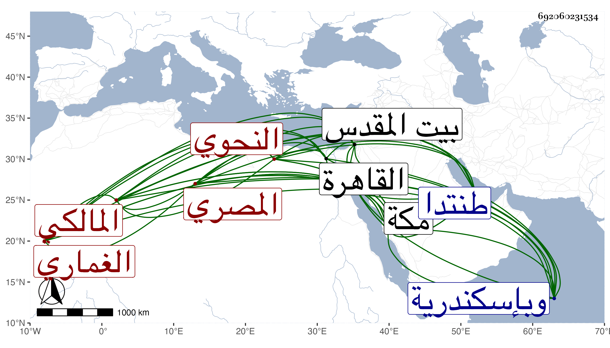

0902Sakhawi.DawLamic.ITO20230111-ara1.EIS1600.692060231534
Biography ID: 692060231534
377
محمد بن محمد بن علي بن عبد الرزاق الشمس أبو عبد الله الغماري ثم المصري المالكي النحوي . ولد كما وجد بخطه وعليه اقتصر غير واحد في يوم الأحد خامس ذي القعدة سنة عشرين وسبعمائة وقيل في التي قبلها ولازم أبا حيان حتى أخذ عنه العربية بل وتلا عليه للثمان وسمع عليه قصيدته عقد اللآلئ وكثيرا من كتب القراآت واللغة والحماسة وغيرها وعليه انتفع وبه تخرج وقرأ في الأدب على الجمال بن نباتة وعنه أخذ سيرة ابن إسحق ، وارتحل فقرأ ببيت المقدس على الصلاح العلائي أشياء من تصانيفه وبمكة على خليل بن عبد الرحمن المالكي الكثير من كتب الحديث وبه تفقه وعلى الشهاب أحمد بن قاسم الحرازي واليافعي وصحبه في آخرين وبإسكندرية على الجمال بن البوري وابن طرخان ولو توجه لذلك في ابتدائه أو تيسر له من يعتني به لأدرك الإسناد العالي مع أنه كان يذكر أنه سمع أبا الفرج بن عبد الهادي وكان أحفظ الناس لشواهد العربية وأحسنهم كلاما عليها وللغة مع مشاركة في القراآت والأصول والفروع والتفسير وقد تصدى للإقراء دهرا واستقر بآخرة في مشيخة القراء بالشيخونية وأخذ عنه الأكابر وتخرج به خلق وصار شيخ النحاة بدون مدافع وكان ممن أخذ عنه شيخنا وأدرجه في شيوخه الذين كان كل واحد منهم متبحرا ورأسا في فنه الذي اشتهر به لا يلحق فيه وقال إنه كان كثير الاستحضار للشواهد واللغة مع مشاركة في القراآت والعربية ، وقال في موضع آخر أنه كان عارفا باللغة والعربية كثير المحفوظ للشعر لا سيما الشواهد قوى المشاركة في فنون الأدب ، وابن الجزري وقال في طبقاته للقراء إنه نحوي أستاذ انتهت إليه علوم العربية في زمانه وقال أنه قرأ عليه عقد اللآلئ وسمعها ابناه أبو الفتح محمد وأبو بكر أحمد والتقى الفاسي . وأغفل ذكره في تاريخ مكة مع أنه جاور بها سنين لكنه ذكره في ذيل التقييد وقال إنه كان واسع المعرفة بالعربية والحفظ لشواهدها مع مشاركة في الفقه وغيره وهو ممن قرض انتقاد البدر الدماميني على شرح لأمية العجم ، وحدث بالكثير ولقيت خلقا من أصحابه الآخذين عنه رواية ودراية فمنهم سوى شيخنا الزين رضوان وهو ممن أخذ عنه القراآت والعربية والرواية وانتفع به . وكانت وفاته في يوم الخميس حادي عشرى رجب سنة اثنتين بالقاهرة ووهم من أرخه في شعبان وحكاه بعضهم قولا آخر ، ولم يخلف في معناه مثله رحمه الله وإيانا ، وأنشدنا شيخنا رحمه الله غير مرة أن شيخه الغماري أنشده أن شيخه أبا حيان أنشده قوله :
| وأوصاني الرضى وصاة نصح | وكان مهذبا شهما أبيا |
| بأن لا تحسنن ظنا بشخص | ولا تصحب حياتك مغربيا |
قال شيخنا وشيخنا وشيخه والرضى مغاربة وذلك من الغرائب . ومما أورده الجمال ابن ظهيرة عنه بالإجازة مما أنشده له أبو حيان من قوله :
| عداتي لهم فضل علي ومنة | فلا أذهب الرحمن عني الأعاديا |
| هم بحثوا عن زلتي فاجتنبتها | وهم نافسوني فاكتسبت المعاليا |
وحدث المقريزي في عقوده عن شيخه أبي حيان قال ألزمني الأمير ناصر الدين محمد بن جنكلي بن البابا المسير معه لزيارة أحمد البدوي بناحية طنتدا فوافيناه يوم الجمعة وإذا هو رجل طوال عليه ثوب جوخ عال وعمامة صوف رفيع والناس يأتونه أفواجا فمنهم من يقول يا سيدي خاطرك مع غنمي وآخر يقول مع بقري وآخر مع زرعي إلى أن حان وقت الصلاة فنزلنا معه إلى الجامع وجلسنا لانتظار إقامة الجمعة فلما فرغ الخطيب وأقيمت الصلاة وضع الشيخ رأسه في طوقه بعد ما قام قائما وكشف عن عورته بحضرة الناس وبال على ثيابه وحصر المسجد واستمر ورأسه في طوق ثوبه وهو جالس إلى أن انقضت الصلاة ولم يصل نفعنا الله بالصالحين .
